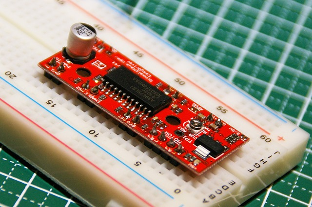
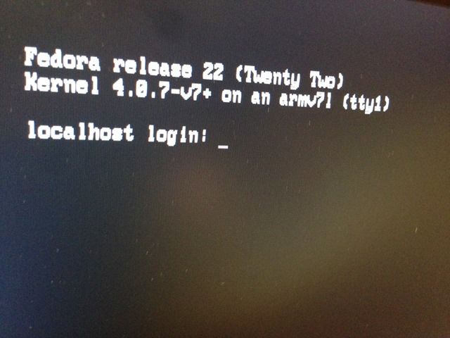

1個160円くらいのEasyDriverを３つゲットして、まずは１つを半田付け。

ブレッドボードも新調しました！ 前使ってたのが、ピンがめちゃくちゃ入りにくくて。今度のは、いいですね。挿しやすくてイライラしない。で、こんな感じに差し込んで半田付け。

で、ステッピングモーターを用意してなかったので、フロッピーディスクか、CD-ROMを分解してステッピングモーターを取り出すことに。
Junk物色中。配線中、、、、完了。接続。、、、、うごきません。！！！
寝る！
・・・ 起床後、ふと見るとEasyDriver 側のLEDがついていないのを発見。電源が入っていませんでした。

５Vをモータードライブ用に入れていたんですが、仕様的に、6～30Vとか書いてあるので、手持ちに8Vくらいのしかなかったので、それを印加。
サンプルは、ネットで見たのをコピペ。PINのアサインは、PIN2 に Direction (正逆の回転方向)と、PIN3 にStep パルスを。

ほほー、な感じです。他にもPinがあるけども、深追いせず。Sleep とか PFD とか何に使うんでしょうかね。
/*
Junk FDD Stepper Motor Control Sample.
JunkHack 2015.04.19
*/
#include <Stepper.h>
int steps; // ステップカウンター
int movement = 1400; // 片道移動量 ( step 数)
int Delay = 200; // 遅延 ms
int dirPin = 2; // 回転方向出力 Pin
int stepPin = 3; // ステップパルス Pin
void setup() {
pinMode(dirPin, OUTPUT); // 回転方向の出力PINを指定
pinMode(stepPin, OUTPUT); // ステップ出力PINを指定
digitalWrite(dirPin, LOW); // PIN出力をLOWで初期化
digitalWrite(stepPin, LOW); // PIN出力をLOWで初期化
steps = 1; // ステップカウンターを初期化
}
void loop() {
if ( steps < movement ) { // 移動量を超えてなければ
digitalWrite(dirPin, HIGH); // 回転方向出力PIN は HIGH (5V)
}
if ( steps > movement ) { // 移動量を超えたら
digitalWrite(dirPin, LOW); // 回転方向出力PIN を LOW (0V)
}
digitalWrite(stepPin, HIGH); // ステップ出力 PIN を HIGH (5V)
delayMicroseconds(Delay); // 遅延
digitalWrite(stepPin, LOW); // ステップ出力 PIN を LOW (0V)
delayMicroseconds(Delay); // 遅延
steps += 1; // ステップカウンターを +1加算
if ( steps > movement * 2 ) { // 往復したら
steps = 1; // ステップカウンターリセット
}
}